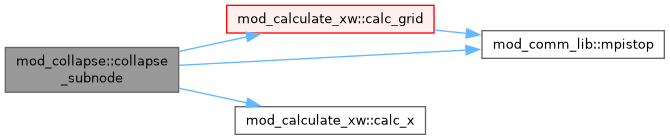
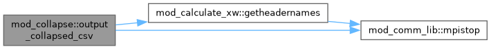
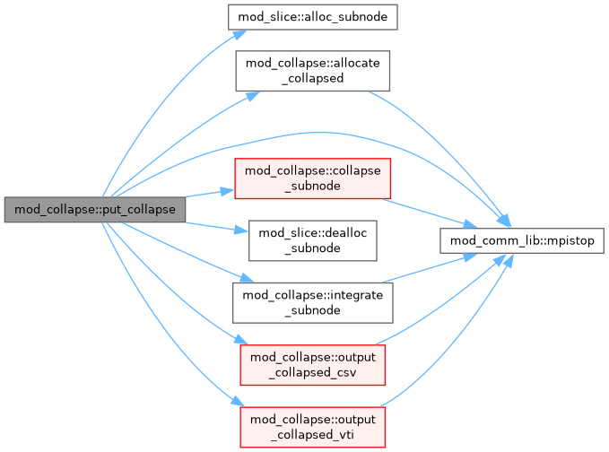
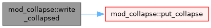

mod_collapse Module Reference
Collapses D-dimensional output to D-1 view by line-of-sight integration. More...
Functions/Subroutines | |
| subroutine | write_collapsed |
| subroutine | put_collapse (dir) |
| subroutine | output_collapsed_csv (dir, normconv) |
| subroutine | output_collapsed_vti (dir, normconv) |
| subroutine | allocate_collapsed (dir) |
| subroutine | integrate_subnode (igrid, jgrid, dir) |
| subroutine | collapse_subnode (igrid, jgrid, dir, normconv) |
Detailed Description
Collapses D-dimensional output to D-1 view by line-of-sight integration.
Function/Subroutine Documentation
◆ allocate_collapsed()
| subroutine mod_collapse::allocate_collapsed | ( | integer, intent(in) | dir | ) |
◆ collapse_subnode()
| subroutine mod_collapse::collapse_subnode | ( | integer, intent(in) | igrid, |
| integer, intent(in) | jgrid, | ||
| integer, intent(in) | dir, | ||
| double precision, dimension(0:nw+nwauxio), intent(out) | normconv ) |
Definition at line 491 of file mod_collapse.t.
Here is the call graph for this function:

◆ integrate_subnode()
| subroutine mod_collapse::integrate_subnode | ( | integer, intent(in) | igrid, |
| integer, intent(in) | jgrid, | ||
| integer, intent(in) | dir ) |
◆ output_collapsed_csv()
| subroutine mod_collapse::output_collapsed_csv | ( | integer, intent(in) | dir, |
| double precision, dimension(0:nw+nwauxio), intent(in) | normconv ) |
Definition at line 84 of file mod_collapse.t.
Here is the call graph for this function:

◆ output_collapsed_vti()
◆ put_collapse()
| subroutine mod_collapse::put_collapse | ( | integer, intent(in) | dir | ) |
Definition at line 33 of file mod_collapse.t.
Here is the call graph for this function:

◆ write_collapsed()
| subroutine mod_collapse::write_collapsed |
Definition at line 11 of file mod_collapse.t.
Here is the call graph for this function:

Generated by